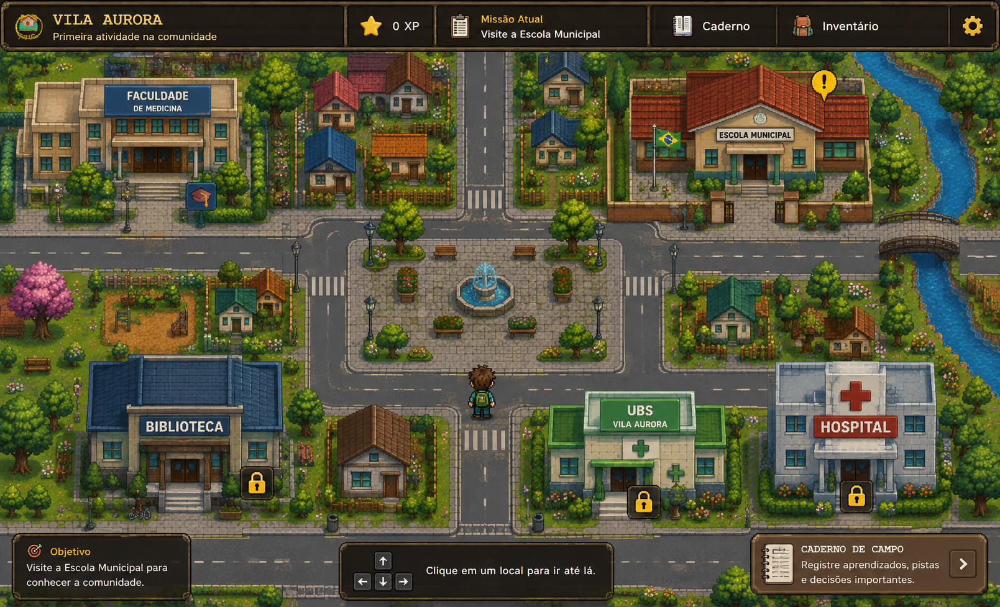

MÉTODOS CIENTÍFICOS EM MEDICINA
VILA AURORA
Uma jornada pela comunidade, pela ciência e pelo cuidado.
Capítulo 1 • Da extensão à pergunta de pesquisa
!
CAPÍTULO 1 CONCLUÍDO
UMA NOVA PERGUNTA
Você partiu de uma necessidade da comunidade, fundamentou e executou uma ação de extensão, analisou o que a prática revelou e identificou questões que podem exigir investigação sistemática.
🔬 PRÓXIMO CAMINHOTransformar uma pergunta em uma proposta de pesquisa.
⭐ 0 XP